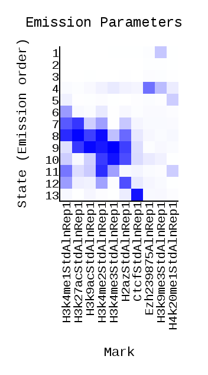
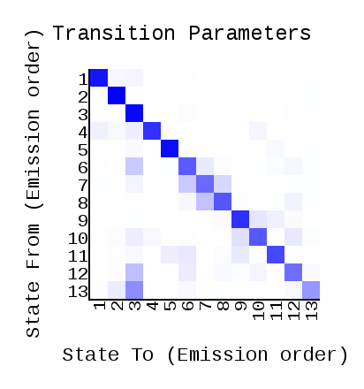
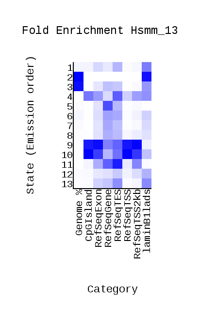
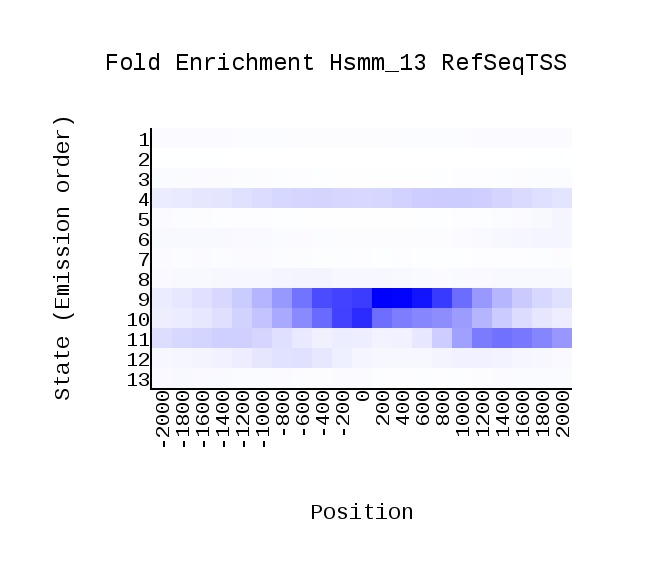
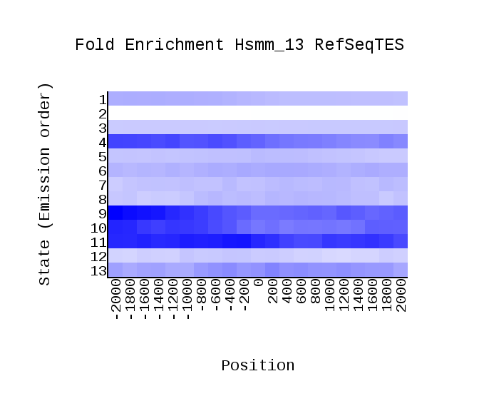

<center><h1>ChromHMM Report</h1></center>
Input Directory: /content/binarizedData<br>
Output Directory: /content/learnmodel/<br>
Number of States: 13<br>
Assembly: hg19<br>
Full ChromHMM command: LearnModel -b 200 /content/binarizedData /content/learnmodel/ 13 hg19
<h1>Model Parameters</h1>
<br>
<li><a href="emissions_13.svg">Emission Parameter SVG File</a><br>
<li><a href="emissions_13.txt">Emission Parameter Tab-Delimited Text File</a><br>
<br>
<li><a href="transitions_13.svg">Transition Parameter SVG File</a><br>
<li><a href="transitions_13.txt">Transition Parameter Tab-Delimited Text File</a><br><br>
<li><a href="model_13.txt">All Model Parameters Tab-Delimited Text File</a> <br>
<h1>Genome Segmentation Files</h1>
<li><a href="Hsmm_13_segments.bed">Hsmm_13 Segmentation File (Four Column Bed File)</a><br>
<br>
Custom Tracks for loading into the <a href="http://genome.ucsc.edu">UCSC Genome Browser</a>:<br>
<li><a href=Hsmm_13_dense.bed>Hsmm_13 Browser Custom Track Dense File</a> <br>
<li><a href=Hsmm_13_expanded.bed>Hsmm_13 Browser Custom Track Expanded File</a><br>
<h1>State Enrichments</h1>
<h2>Hsmm_13 Enrichments</h2>
 <br>
<li><a href="Hsmm_13_overlap.svg">Hsmm_13 Overlap Enrichment SVG File</a><br>
<li><a href="Hsmm_13_overlap.txt">Hsmm_13 Overlap Enrichment Tab-Delimited Text File</a><br>
 <br>
<li><a href="Hsmm_13_RefSeqTSS_neighborhood.svg">Hsmm_13_RefSeqTSS_neighborhood Enrichment SVG File</a><br>
<li><a href="Hsmm_13_RefSeqTSS_neighborhood.txt">Hsmm_13_RefSeqTSS_neighborhood Enrichment Tab-Delimited Text File</a><br>
 <br>
<li><a href="Hsmm_13_RefSeqTES_neighborhood.svg">Hsmm_13_RefSeqTES_neighborhood Enrichment SVG File</a><br>
<li><a href="Hsmm_13_RefSeqTES_neighborhood.txt">Hsmm_13_RefSeqTES_neighborhood Enrichment Tab-Delimited Text File</a><br>
